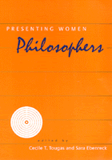

<body bgcolor="#FFFFFF" text="#000000" link="#0000FF" vlink="#CC0000" alink="#CC0000"><center><hr width="350" size="1" align="center" noshade>Women's unique outlook on life reveals itself in philosophical thought throughout the ages<hr width="350" size="1" align="center" noshade><p><a href="https://cdcshoppingcart.uchicago.edu/Cart/ChicagoBook.aspx?ISBN=9781566397605&&PRESS=temple" target="_top">Buy this book!</a> | <a href="https://cdcshoppingcart.uchicago.edu/Cart/Cart.aspx?PRESS=temple" target="_top">View Cart</a> | <a href="https://cdcshoppingcart.uchicago.edu/Cart/Cart.aspx?PRESS=temple" target="_top">Check Out</a></p><p></p></center><!--none//--><h1>Presenting Women Philosophers</h1>
<h3>edited by Cecile T. Tougas and Sara Ebenreck</h3>
<P>cloth 1-56639-760-X $87.50, May 00, <FONT COLOR=#990033>Out of Stock Unavailable</FONT>
<br>paper 1-56639-761-8 $36.95, May 00, <FONT COLOR=#990033>Available</FONT>
<BR> 280 pp
7x10
</P><BLOCKQUOTE><I>"One of the strengths of </I>Presenting Women Philosophers<i> is the way that it integrates accounts of women's lives with their work, while providing well-thought-out assessments of that work. Another is that it develops and analyzes work that simply is not otherwise available.... [This book] examines the writings of women philosophers in a way that no other book to my knowledge does, and it is thematically well-integrated."</I>
<br>&#151<b>Charlene Haddock Seigfried</b>, Professor of Philosophy, Purdue University<I></I></BLOCKQUOTE>
<P>Western philosophy has long excluded the work of women thinkers from their canon. <I>Presenting Women Philosophers</I> addresses this exclusion by examining the breadth of women's contributions to Western thought over some 900 years. Editors Cecile T. Tougas and Sara Ebenreck have gathered essays and other writings that reflect women's deep engagement with the meaning of individual experience as well as the continuity of their philosophical concerns and practices. Arranged thematically, the collection ranges across eras and literary genres as it emphasizes the intellectual significance of written work by key figures&#151for example, Hildegard of Bingen's visionary writings, Iris Murdoch's fiction, Hannah Arendt's historical narratives, and the oral storytelling in black women's literary tradition. The collection also brings to light the philosophical importance of little-known work by such writers as Mme de Sablé and Mme de Condorcet. This wide-ranging collection offers non-philosophers an introduction to women's thought but also promises to engage advanced students of philosophy with new research on unrecognized contributions.
<BR>&nbsp;<h2>Excerpt</h2><P>Excerpt available at <a href="http://www.temple.edu/tempress">www.temple.edu/tempress</a></p>
<BR>&nbsp;<h2>Contents</h2><P>
<p>Series Foreword &#150 Elizabeth K. Minnich
<br>Acknowledgments
<br>Introduction &#150 Sara Ebenreck and Cecile T. Tougas
<p><b>Part I. The Loss and the Recovery of Women's Voices</b>
<br>Introduction &#150 Sara Ebenreck
<br>1. Why Have There Been So Few Women Philosophers? &#150 Gerda Lerner
<br>2. Introduction to <I>A Voice from the South</I> &#150 Mary Helen Washington
<p><b>Part II. Naming Reality-Differently</b>
<br>Introduction &#150 Sara Ebenreck
<br>3. Hildegard of Bingen [1098-1179]: A New Medieval Philosopher? &#150 Helen J. John, S.N.D.
<br>4. Ednah Dow Cheney's [1824-1904] American Aesthetics &#150 Therese B. Dykeman
<br>5. Jane Addams's [1860-1935] Feminist Ethics &#150 Marilyn Fischer
<br>6. Moral Wisdom in the Black Women's Literary Tradition &#150 Katie Geneva Cannon
<br>7. Susanne K. Langer's [1895-1985] Conception of "Symbol": Making Connections Through Ambiguity &#150 Beatrice K. Nelson
<br>8. Hannah Arendt [1906-1975]: On the Relation of Thinking and Morality &#150 Elizabeth K. Minnich
<br>9. Hannah Arendt [1906-1975] and Susan Griffin [1943- ]: Storytelling-Toward a Feminist Metahistory &#150 Shari Stone-Mediatore
<br>10. Finding New Roots as a Woman Philosopher &#150 Sara Ebenreck
<p><b>Part III. Philosophical Friendships</b>
<br>Introduction &#150 Cecile T. Tougas
<br>11. Heloise [1101-1164] and Abelard &#150 Mary Ellen Waithe
<br>12. Elisabeth, Princess Palatine [1618-1680]: Letters to René Descartes &#150 Andrea Nye
<br>13. Gloria Anzaldúa's [1942- ] Borderlands / la Frontera and René Descartes's Discourse on Method: Moving Beyond the Canon in Discussion of Philosophical Ideas &#150 Lisa A. Bergin
<br>14. Mary Astell [1666-1731]: A Pre-Humean Christian Empiricist and Feminist &#150 Jane Duran
<br>15. Harriet Taylor Mill's [1807-1858] Collaboration with John Stuart Mill &#150 Jo-Ellen Jacobs
<br>16. Poems from Fifty Forms for Fifty Philosophies &#150 Veda A. Cobb-Stevens
<br>17. Philosophical Friendship, 1996: A Postscript &#150 Cecile T. Tougas
<p><b>Part IV. Love, Feeling, and Community</b>
<br>Introduction &#150 Cecile T. Tougas
<br>18. Christine de Pizan [1364-1430] and Jehanne d'Arc: "Above All the Heroes Past" &#150 Tracy Adams
<br>19. Madame de Sablé's [1599-1678] Moral Philosophy: A Jansenist Salon &#150 John J. Conley
<br>20. A Woman-Centered Philosophy: An Alternative to Enlightenment Thought (1700-1750) &#150 Ann Willeford
<br>21. Madame de Condorcet's [1764-1822] Letters on Sympathy &#150 Karin Brown
<br>22. Iris Murdoch's [1919-1999] Concept of Love and <I>The Bell</I> &#150 Patricia J. O'Connor
<br>23. Why I Have Worked on This Book for Several Years &#150 Cecile T. Tougas
<p>Contributors
<br>Index
</P><BR>&nbsp;<H2>About the Author(s)</H2>
<P><B>Cecile T. Tougas</B>, formerly an Assistant Professor of Philosophy, is a teacher of Latin and Algebra at Ben Franklin Academy in Atlanta.</P>
<table><tr><td valign="top"><img src="/tempress/authors/1498_au2.gif" height="90" width="75"></td><td width="100%" valign="middle"><p><P><B>Sara Ebenreck</B> is Assistant Professor of Philosophy at St. Mary's College of Maryland.</P></td></tr></table>
<BR><H2>Subject Categories</H2>
<p><A HREF="/tempress/philosophy.html" TARGET="_top">Philosophy and Ethics</a>
<BR><A HREF="/tempress/women.html" TARGET="_top">Women's Studies</a>
<BR><A HREF="/tempress/education.html" TARGET="_top">Education</a>
</p>
<BR><h2 class="inpageheading">In the series</H2>
<P><I><a href="http://www.temple.edu/tempress/new_academy.html" onMouseOver="window.status='Click for other books in this series!'; return true;" onMouseOut="window.status=''; return true;" target="_top">The New Academy</a></i>, edited by Elizabeth Kamarck Minnich.
</p><p>The accelerated growth of interdisciplinary programs is just one indicator of the radical changes that have occurred within the academy during the past thirty years. Women's studies, peace studies, disability studies, environmental studies, queer studies, postcolonial studies, gender studies, ethnic studies (together and separately), cultural studies, and many more, have become established sites of inquiry. Much is owed to past generations of writers and thinkers whose voices were silenced, only now to be welcomed by academia. Considering this shifting of borders and expansion of domains, books in <I>The New Academy</I>, a series edited by Elizabeth Kamarck Minnich, explore conceptual tools developed by recent scholarship to extend, reconfigure, and comment upon intersections and divisions among established and emerging fields of academic study. Moving beyond rhetoric and jargon, the series engages the growing readership for critical and creative, inclusive and reconciling scholarship.</p>
<p align="center"><a href="https://cdcshoppingcart.uchicago.edu/Cart/ChicagoBook.aspx?ISBN=9781566397605&&PRESS=temple" target="_top">Buy this book!</a> | <a href="https://cdcshoppingcart.uchicago.edu/Cart/Cart.aspx?PRESS=temple" target="_top">View Cart</a> | <a href="https://cdcshoppingcart.uchicago.edu/Cart/Cart.aspx?PRESS=temple" target="_top">Check Out</a></p><p><font face="Arial" size="1"><a href="copyright.html" onMouseOver="window.status='Web Copyright Policy';return true;" onMouseOut="window.status=''" title="Web Copyright Policy">&copy;</a> 2015 <a href="http://www.temple.edu" target="new" onMouseOver="window.status='Link to Temple University home page';return true;" onMouseOut="window.status=''" title="Link to Temple University home page">Temple University</a>. All Rights Reserved. http://www.temple.edu/tempress/titles/1498_reg.html</font></p>